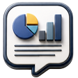

BUSINESS INTELLIGENCE · PROJECTE 13

Projecte 14 · Quadre de comandament de Power BI
Quadre de comandament de Power BI · Anàlisi de despeses
Informe executiu de Power BI per analitzar la despesa amb proveïdors, l'evolució mensual de les compres, l'aprofitament dels descomptes i la distribució per país, categoria i nivell de proveïdor.

CONTEXT I OBJECTIU
El projecte utilitza les dades de compres a proveïdors per analitzar quant es va gastar, com va canviar la despesa d'un mes a l'altre i en quins proveïdors, articles i categories es concentra. Cada factura identifica una compra, mentre que el detall mostra els articles inclosos i els imports. Aquesta informació permet estudiar tant la despesa total com els productes que la componen.
També s'incorporen les dades de cada proveïdor, les ubicacions, les dates i les condicions comercials registrades, com ara els descomptes i els terminis de pagament. A Power BI, aquestes taules es relacionen perquè una mateixa compra es pugui analitzar des de diferents perspectives. El model també inclou informació de monedes i tipus de canvi que aporta context a les operacions.
Amb aquesta informació es va construir un quadre de comandament amb una portada de navegació i dues pàgines d'anàlisi. «Tendència i distribució de la despesa» mostra com canvia la despesa al llarg del temps i com es reparteix entre articles, proveïdors i ubicacions. «Descomptes per proveïdor» permet revisar les condicions de descompte i els imports d'estalvi associats a les compres.
MODEL I DIAGNÒSTIC
Model relacional i indicadors DAX
Per construir el model es va connectar cada factura amb les seves línies de detall i amb les taules que descriuen els proveïdors, els articles, les ubicacions i les dates. Aquestes relacions permeten que, en seleccionar un proveïdor o una categoria, l'informe mostri únicament les operacions vinculades. La taula de calendari organitza les dates per mesos i períodes per facilitar les comparacions al llarg del temps.
A partir d'aquest model es van crear mesures DAX, és a dir, càlculs que Power BI torna a fer segons els filtres triats. Inclouen la despesa total (Total Invoice), el nombre de factures (Invoice Count), la despesa associada a descomptes (Spend with Discount) i l'estalvi per descomptes (Discount Savings). També es calculen percentatges de descompte i terminis de pagament. Cada indicador aporta una mirada diferent sobre les compres i les condicions acordades amb els proveïdors.
Per seguir l'evolució mensual es compara la despesa de cada mes amb la del mes anterior. Una mesura recupera l'import del període previ (Total Invoice Prev Month) i una altra calcula quant va augmentar o disminuir en termes percentuals (Total Invoice MoM %). La taula de calendari permet que la comparació utilitzi períodes equivalents.
DAX DE REFERÈNCIA · DESPESA DEL MES ANTERIOR
Total Invoice Prev Month = CALCULATE([Total Invoice], DATEADD('Calendar'[Date], -1, MONTH))En aquest exemple, CALCULATE avalua la despesa total del mes anterior i DATEADD desplaça un mes les dates que s'estan analitzant. És una reconstrucció didàctica del càlcul: no és una transcripció verificada de la mesura original del PBIX.
Tendència i distribució de la despesa
La pàgina «Tendència i distribució de la despesa» presenta indicadors generals per conèixer l'import total de les compres, quantes factures es van registrar, quina part de la despesa està associada a descomptes i quin estalvi reflecteixen les dades. Un gràfic mostra l'evolució mensual i permet comparar períodes per identificar augments, disminucions i canvis en la composició de la despesa.
DAX DE REFERÈNCIA · VARIACIÓ MENSUAL DE LA DESPESA
Total Invoice MoM % = DIVIDE([Total Invoice] - [Total Invoice Prev Month], [Total Invoice Prev Month])La fórmula compara la despesa del mes actual amb la del mes anterior. Primer calcula la diferència i després la divideix per la despesa del període previ per obtenir la variació percentual. DIVIDE fa aquesta divisió de manera controlada quan el valor anterior és zero o no està disponible. L'expressió és il·lustrativa i s'ha de contrastar amb el DAX original del PBIX.
La mateixa pàgina desglossa la despesa per categories, subcategories i articles. A més, presenta comparacions per país, ciutat i nivell de proveïdor, juntament amb un mapa de distribució geogràfica. Els filtres permeten observar, per exemple, com canvia el pes de cada categoria quan se selecciona un període o un grup de proveïdors.
Descomptes i condicions per proveïdor
La pàgina «Descomptes per proveïdor» se centra en les condicions comercials de les compres. Presenta els percentatges de descompte, els dies previstos per accedir-hi i els terminis de pagament, juntament amb dos imports diferents: la despesa associada a descomptes i l'estalvi calculat a partir dels registres. La lectura conjunta permet comparar el volum de compres amb les condicions de cada proveïdor.
Els gràfics comparen proveïdors segons el nivell i mostren com canvia l'estalvi al llarg dels mesos. També reuneixen informació de la despesa i els descomptes per ciutat. Per facilitar la comparació entre ubicacions, l'informe inclou un rànquing que ordena les ciutats segons la despesa corresponent a la selecció actual.
DAX DE REFERÈNCIA · RÀNQUING DE DESPESA PER CIUTAT
City Spend Rank = RANKX(ALLSELECTED('Vendor'[Vendor City]), [Total Invoice], , DESC, DENSE)RANKX permet assignar una posició a cada ciutat segons la despesa. ALLSELECTED pren com a referència les ciutats incloses en els filtres actius, de manera que l'ordre canvia quan l'usuari modifica la selecció. És un exemple explicatiu de la lògica del rànquing, no una còpia verificada de la seva expressió DAX al PBIX.
Els segmentadors permeten triar dates, proveïdors o nivells i revisar els indicadors amb el mateix criteri de selecció. El percentatge de descompte expressa una condició comercial; la despesa associada a descomptes indica l'import de les compres implicades, i l'estalvi reflecteix una altra mesura de l'informe. Presentar-los per separat ajuda a interpretar correctament les diferències.
LLIURAMENT I APRENENTATGE
El lliurament consisteix en un quadre de comandament de Power BI amb una portada i dues pàgines interactives. La primera permet seguir l'evolució i la distribució de la despesa; la segona reuneix els indicadors de descomptes i condicions de pagament per proveïdor. En totes dues, les targetes i els gràfics s'actualitzen en canviar el període, la categoria o el proveïdor seleccionat.
El model relaciona les compres amb els proveïdors, els articles i les dates perquè els filtres de l'informe afectin tots els indicadors de manera coherent. Si s'incorporen noves operacions a les fonts de dades i s'actualitza el model a Power BI, el quadre de comandament pot mostrar imports, variacions mensuals i descomptes amb informació més recent, sempre que es mantingui l'estructura de les dades d'origen.
GALERIA